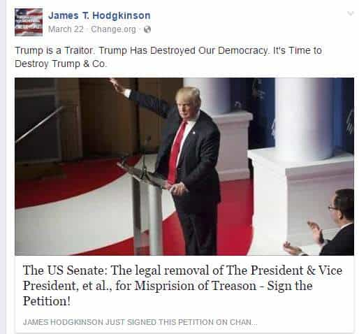

Luke Stranahan is an engineer by trade and an armed patriot by inclination. He writes for Return of Kings as a leisure pursuit and an attempt to do his part to help reverse the slide into moral decrepitude of modern society. Follow him on Twitter.


On last Wednesday, June 14th, James Hodgkinson, a leftist, opened fire on a recreational baseball game of Republican Congressmen in which they were training for a charity event. He shot four, and two of those were hospitalized. Hodgkinson was shot in return by police on-site, apprehended, then died of his wounds. Today we are going to cover some interesting points of this act of terrorism and why the left is so desperate to have it be ignored.
Despite the left’s attempts to appear as the party of “peace and tolerance,” Hodgkinson was one of them. Although Facebook, in a move of questionable bias, has removed his profile, and one of identical nature put up “in memorial” by like-minded seditionists, anything on the internet of interest is permanent, and certain parts were archived.
Banners of Bernie Sanders don’t lie. I voted for Trump, but, with the little I use Facebook myself, the man does not appear on any of my pictures, let alone my timeline’s banner. Add to that the typical leftist’s cry of removing a sitting President and Vice-President from office for treason when their only crime is winning the election while not being their candidate of choice.

The scary thing is that his Facebook page looks basically identical to thousands of progressives out there. Makes you wonder how many more crazies are going to jump the fence from activism to terrorism now that all their candidates lost and they’re irrelevant for at least a few years.
Since no one has died, the left, in an attempt at damage control, are hoping that this shooting can be ignored and will go away. They are even abandoning their traditional “someone got shot, holy shit, GUN CONTROL LEGISLATION NOW!” platform, like they did with the last Congressman shot, Gabby Giffords, since it was one of theirs who did it.
Congressmen on the “kill list”
However, there’s a kill list. While a sane person might realize that they could probably remember something as important to them as a vendetta, and keep it in their minds and away from police evidence, Hodgkinson, in a typical liberal “muh feelz,” star-of-your-own-movie, Kill Bill style venting of emotional angst, had a list of whom he wanted to kill, and they were all not only Republicans, but members of the Freedom Caucus, a right-wing sub group of Congress much reviled by Democrats and their statist ilk.
Hodgkinson used a SKS in the shooting, a gun which CNN, no stranger to in-poor-taste pushing of agendas, noted is “widely available in the US and used in the Dallas shooting of last year,” even though that last bit is untrue (Micah Johnson used a Saiga AK).
Putting on the gun writer hat for a moment, the Samozaryadny Karabin Sistemy Simonova (Semiautomatic Carbine System of Simonov, SKS) is not an awesome weapon. They’re kind of neat looking, and they are cheap, and any gun collector just wanting a plinking gun to hand to newbies that won’t hurt them and they won’t hurt it in turn should have one, but the AK-47 is a superior weapon in every aspect with the exception of the safety (the SKS has a neat little trigger-obstructor like a Garand, but it’s off to the side, as opposed to the giant stamped handle of the AK.)
Accuracy is not a strong suit of this weapon. Depending on whether or not the rifle specifically in question was actually a Russian gun, or was one of the many Commie knockoffs (like the Chinese Norinco), the accuracy of these things should be measured in whether or not you can hit the side of a barn (and for some of them, shooting from the inside of said barn.)
SKS. Note the limited, clip fed internal magazine and poor sighting system.
While I would not care to be shot by one, the 7.62×39 Soviet cartridge (native to the SKS and AK-47) is not a powerful cartridge. Lacking the superior aerodynamics of smaller caliber cartridges like the 5.56×45 of US and NATO forces, the 7.62×39 flies in the inefficient manner of its .30 caliber brethren of the day, and is why the Soviets went to the 5.45×39 round in the AK-74 model. Making matters worse, the bullet is not pushed by much powder for its caliber; the cartridge, being 39mm overall length, is much shorter than the .308 Winchester’s 51mm, or the 30-06’s 63mm, even though they all shoot roughly the same bullet.
The SKS has horrible iron sights, and, being a Soviet style rifle, has the gas system on top along with the removable service cover, so there is no real good way to mount better optics. The magazine, with the exception of a select few rifles made to take AK detachable mags, is a very good internal, ten shot magazine, but it is slow to load manually, even with stripper clips, and holds limited ammo.
All in all, this is a cheap rifle that someone who is passionate about their beliefs, but kind of stupid about everything else, would use in this sort of thing. The only good sides about it is that the rifle limited Hodgkinson’s damage in terms of accuracy, volume, and magnitude of firepower even more than his probably lackluster shooting skills, and that, if any news source were to report on the amount of ammunition he had with him, they would actually get it right, as the SKS is indeed fed by clips, not magazines.
There’s no walking away from this one. Guy shows up to a political event with a rifle, opens fire, hits a few people and is then shot dead, and a list of his desired targets is found on his body. The left is trying to ignore this one, as there really is no other option for them, and this highlights a crucial difference between them and the right.
Left Wing Domestic Terrorist
Conservatives, libertarians, and Constitutionalists believe in the idea of rule by the existing law. If you want to do something, you must do it legally. Since you believe in preserving the system, the system is generally on your side except for new laws introduced by progressives, and you fight those laws, and those that push them, legally.
Liberals and progressives believe that current laws are wrong, and, due to the religious fervor of their movement, believe that those laws do not apply to anyone who is doing the work of the progressive agenda (but they still apply to everyone else). The reason the left is not decrying Hodgkinson is they not only see nothing wrong with what he did, or attempted to do, but they wish they could do it themselves.
Just because we all know you can’t do it doesn’t make it ok for you to say it.
Remember this leftist shooter the next time the progressives trot out the “Islamic terrorism is not the problem; right-wing terrorism is the problem” screed, and throw it back at them.
This is the danger we, and everyone who is not a leftist progressive, face. In their turmoil that their cause/religion lost the majority of Federal and state elections last fall in a mandate of the people against the failed policies of the Obama regime, the progressives are increasingly turning to violence to enact their will on the people of the USA.
Fortunately, like most things, they are not very good at it, and any concealed weapon carrier who is proficient should have no issue stopping one of these lunatics. Two in the chest, one in the problem glasses. Be safe.
Read More: As It Becomes Clear That Donald Trump Cannot Save The West, Only One Outcome Becomes Inevitable